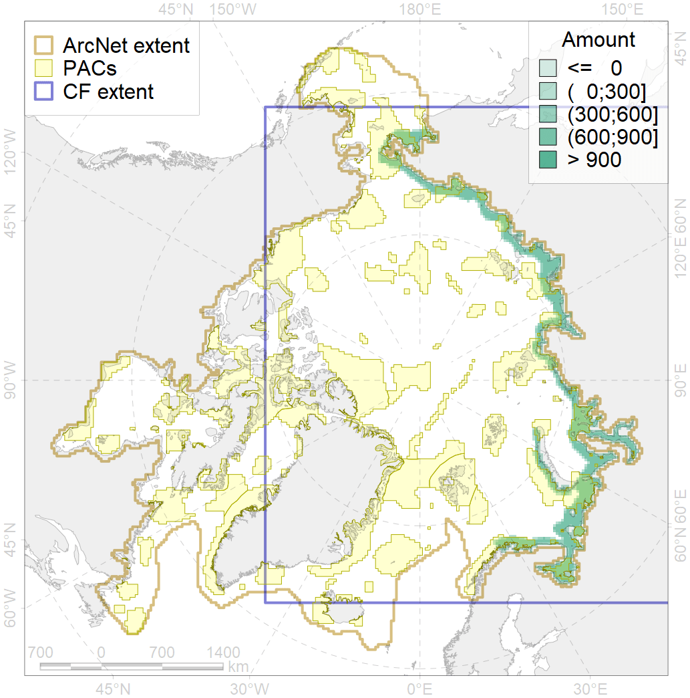
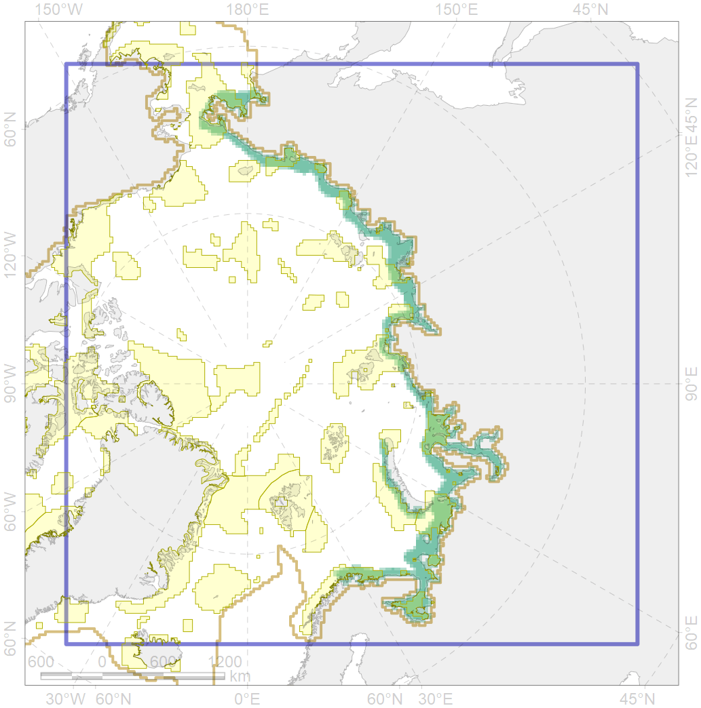

4052

| CF ID | 4052 |
| CF Name | Range of the Fourhorn Sculpin (Myoxocephalus quadricornis), American populations |
| Time Period | 1950-2010s |
| Source(s) | Coad, Reist, 2018; Mecklenburg et al., 2018 |
| Seasonality | January-December |
| Depth Horizon | 0-55 |
| Methodology | Compiled from literature sources based on field observations |
| Author Name | N. Chernova |
| Notes | |
| Conservation Target Set in the Scenario | 0.03 |
| Conservation Target Achieved in the Scenario | 0.434 (Scenario: 1445.9%) |
| PAC ID | Proportion in the PAC | Contribution to ArcNet Target Achievement | PAC’s Contribution to the Achieved Target |
|---|---|---|---|
| 4 | 0.8% | 20.5% | 1.4% |
| 5 | 5.8% | 182.1% | 12.6% |
| 8 | 3.1% | 84.4% | 5.8% |
| 9 | 0.8% | 15.9% | 1.1% |
| 10 | 1.4% | 39.0% | 2.7% |
| 12 | 2.0% | 62.1% | 4.3% |
| 13 | 1.5% | 47.4% | 3.3% |
| 14 | 2.2% | 67.6% | 4.7% |
| 15 | 0.2% | 6.3% | 0.4% |
| 16 | 6.5% | 203.6% | 14.1% |
| 17 | 0.1% | 3.6% | 0.3% |
| 18 | 0.3% | 7.5% | 0.5% |
| 19 | 0.4% | 14.4% | 1.0% |
| 20 | 6.9% | 219.6% | 15.2% |
| 21 | 1.8% | 53.0% | 3.7% |
| 23 | 1.1% | 31.7% | 2.2% |
| 24 | 0.3% | 10.4% | 0.7% |
| 25 | 0.4% | 11.1% | 0.8% |
| 26 | 3.9% | 105.8% | 7.3% |
| 27 | 3.9% | 120.1% | 8.3% |
| inner | 43.4% | 1306.2% | 90.2% |
| outer | 56.2% | 139.6% | 9.6% |